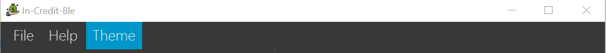

By: Team W17-3 Since: March 2019 Licence: MIT
- 1. Introduction
- 2. Quick Start
- 3. Graphical User Interface Introduction
- 4. Features
- 4.1. Budget Management
- 4.2. Expense Entry Management
- 4.3. Records Management
- 4.4. Miscellaneous
- 4.4.1. Changing FinanceTracker data storage location:
setfile - 4.4.2. Viewing help:
help - 4.4.3. Undoing previous command :
undo - 4.4.4. Redoing the previously undone command :
redo - 4.4.5. Changing theme of application:
theme - 4.4.6. Listing entered commands:
history - 4.4.7. Clearing all entries :
clear - 4.4.8. Exiting the program :
exit - 4.4.9. Saving the data
- 4.4.1. Changing FinanceTracker data storage location:
- 4.5. Upcoming Features
- 4.5.1. Login Feature
[coming in v2.0] - 4.5.2. Enhancements to Summary Feature
[coming in v2.0] - 4.5.3. Enhancements to UI to allow
CategoryBudgetsto be shown[coming in v2.0] - 4.5.4. Separate expenditures based on methods of payment (Cash, Visa, DBS PayLah)
[coming in v2.0] - 4.5.5. Establish saving patterns based on record and derive projected savings/expenses in a time span
[coming in v2.0] - 4.5.6. Links to financial articles
[coming in v2.0]
- 4.5.1. Login Feature
- 5. FAQ
- 6. Command Summary
- 7. Glossary
1. Introduction
Welcome to the In-Credit-Ble User Guide! In-Credit-Ble is your all-in-one application in managing and tracking your
personal finances. Our user-friendly interface will make it easy for you to see how much you can safely spend within your budget and be more aware
of your spending habits. If you are a fast typer, prefer to type over using your mouse and like to get things done
efficiently, then this is the product just for you! In-Credit-Ble is designed for students who prefer to work with a
Command Line Interface (CLI).
This user guide shows you how to get started using In-Credit-Ble. It also provides in-depth documentation on the different features and shows you how to perform basic In-Credit-Ble operations.
2. Quick Start
Follow these steps to get In-Credit-Ble up and running on your computer in no time!
-
Ensure you have Java version
9or later installed in your computer. You can download and install the required Java Development Kit here -
Download the latest
In-Credit-Ble.jarfile here. -
Copy the file to the folder you want to use as the home folder for your finance tracker.
-
Double-click the file to start the application. The GUI should appear in a few seconds as shown below. The In-Credit-Ble finance tracker is loaded with example expense records and budget is still not set.
 Figure 1. UI upon launching the application
Figure 1. UI upon launching the application -
Type the command in the command box and press Enter to execute it.
typinghelpand pressing Enter will open the help window and show the list of commands. -
Some example commands you can try:
-
help: opens the In-Credit-Ble user guide -
clear: clears the existing Finance Tracker to start a Finance Tracker with no expense records -
set: sets the total budget for Finance Tracker -
allocate: allocates budget to a certain category (within the total budget) -
spend: adds an expense record to the Finance Tracker
-
-
Refer to Section 4, “Features” for details of each command.
3. Graphical User Interface Introduction
This section will explain to you the Graphical User Interface (GUI) of In-Credit-Ble Finance Tracker.
The theme of the application has been set to Light, which is different from the start up theme Dark.
summary command)
There are a total of 7 elements in the Graphical User Interface in In-Credit-Ble Finance Tracker
as denoted by the different coloured boxes above. The elements will be explained below.
3.1. Menu Bar

This element is denoted by the pink box.
The menu bar can be used to:
-
Exit the program under File tab
-
Open the Help page to view commands available under Help tab
-
Change the colour theme of the application under Theme tab
=== Records List Panel

This element is denoted by the yellow box.
In the Record List Panel, the list of all your expenditures are recorded here. This panel is scrollable to view all your expense records.
To find specific records based on name, category or date, use the search command.
To list all your expense records again after searching for particular records,
use the command list.
Each record is tagged with an index number before the record name.
The index is used in commands such as delete, edit and select.
3.2. Budget Panel

This element is denoted by the green box.
The budget panel gives you a simple yet effective overview of the total expenses spent so far against the budget that you set for yourself.
As you add more expense records into the finance tracker, the budget panel will change colour according to how close you are to your budget.
See:
-
setcommand to see how to set a budget in the finance tracker -
spendcommand to see how to add expense records into the finance tracker
-
The budget progress bar will be green if you are still within your budget as shown in Figure 6.
-
The budget progress bar will turn orange if your expenditure is above 80% of your total budget as shown in Figure 7.
-
The budget progress bar will turn red if your expenditure exceeded your budget as shown in Figure 8.
3.3. Browser Panel

This element is denoted by the brown box in Figure 2.
The browser panel gives you a numerical summary of your total budget.
|
The current budget will show a negative number should you exceed your budget to let you know the amount you exceeded the budget set for yourself. |
3.4. Summary Panel

This element is denoted by the red box in Figure 3.
The summary panel gives you a nice illustrated summary of your current spending so far in
different categories. To change the browser panel to summary panel, use the summary command.
To change back to the browser panel, simply enter the summary command once again.
3.5. Command Box and Result Display
These elements are denoted by the black and blue boxes in Figures 2 and 3 respectively.
The command box is the place for users to type in their commands. Refer to Section 4, “Features” for details of each command.
The result box displays the results after each command is executed.
This is where the allocated category budgets will be shown when show command is executed.
3.6. Status Footer Bar

This element is denoted by the purple box in Figures 2 and 3.
The left side of the status footer bar shows the time and date of the last update to the finance tracker.
The right side of the status footer bar shows where the storage file for the updated data is saved to.
4. Features
This section describes the various features In-Credit-Ble has to offer. Examples are also included to give you
step-by-step instructions on how to use the different commands.
|
|
4.1. Budget Management
4.1.1. Setting a budget: set
Format: set $/AMOUNT
|
|
4.1.2. Allocating budget based on categories: allocate
Alias: allo
Format: allocate $/AMOUNT c/CATEGORY
|
|
You can still spend over the category budget set. The rationale is for you to be able to see
how much you have exceeded your budget allocated in that category so that you will be able to better plan your
expenditure in the future. However, if you have already spent an amount in the category, but have yet to set a budget for the category, it would not make sense for you to set a budget smaller than the current spending in the category. Thus an error message will be shown in Result Display if you attempt to do so. |
4.1.3. Showing allocated budget and spending in categories: show
Alias: showCatBudget
Format: show, showCatBudget
:
-
The following example will show you an example of what will be listed given the following budget allocation and expenditure in the following categories:
-
set $/500 -
allocate $/100 c/CloThEs -
allocate $/100.10 c/FOOD -
allo $/123.10 c/GiRLfrIEND -
spend n/Buffet $/50.00 c/Food -
spend n/Versace Jacket $/95.00 c/Clothes -
spend n/Girlfriend gift $/99.99 c/Girlfriend -
show
-
-
The following will be displayed on the Result Display
(See Graphical User Interface Introduction (GUI) if you are unsure of the elements of the GUI):

show command
|
4.2. Expense Entry Management
4.2.1. Adding an expense: spend
Alias: add
Format: spend n/NAME $/AMOUNT [d/DATE] c/CATEGORY [r/DESCRIPTION]
|
4.2.2. Editing an entry: edit
Index refers to the index number shown in the list.
Alias: e
Format: edit INDEX [n/NAME] [$/AMOUNT] [d/DATE] [c/CATEGORY] [r/DESCRIPTION]
You can remove the description of any entries by inputting an empty parameter for description.
|
4.2.3. Selecting an entry: select
Alias: sel
Format: select INDEX
|
4.2.4. Deleting an entry: delete
Deleted entries can be recovered via the undo command.
Alias: d, del
Format: delete INDEX
|
4.3. Records Management
4.3.2. Searching an entry based on name/category/date: search
. The total sum of money spent on all the results of the search will also be shown.
Make use of the list command to show the full list of entries again after filtering the entries using the search
command.
|
Alias: find
Format: search FLAG KEYWORD [MORE_KEYWORDS]
:
-
search -cat Accessories -
search -name cake bread -
search -date 10/10/2001

The total amount of money spent on the searched entries will also be shown in the result display.
|
4.3.3. Sorting the entries according to name/amount/date/category: sort
Sort has effect on the entire list of entries (instead of a filtered list).
Format: sort FLAG [ORDER]
|
To sort any list conveniently in the reverse order, use the reverse command!sort -namereverseList will be sorted by name in reverse lexicographical order. |
4.3.4. Reversing the entries: reverse
Reverse has effect on the entire list of entries (instead of a filtered list).
Alias: rev
Format: reverse
4.3.5. Showing summary of records: summary
, with each sector representing a category. Each sector is labelled with name and total expenditure for the category, allowing you to have a clear overview of how your spending habit is like.
By default, In-Credit-Ble will display the browser panel when you first open the application.
Entering the summary command in the command box will allow you to switch from the browser view mode to the summary view mode, as shown in the diagram below.
summary commandYou can also specify a report period by stating the number of days or months via the PERIOD_AMOUNT and PERIOD parameters.
PERIOD_AMOUNT refers to a positive integer, whereas PERIOD refers to a "day" or "month", represented as "d" and "m" respectively.
However, these parameters are optional.
To exit the summary view mode, simply type summary in the command box again.
Your screen should change back to the browser view mode as shown in the diagram below.

summary command againAlias: overview
Format: summary [ #/PERIOD_AMOUNT ] [ p/PERIOD ]
|
4.4. Miscellaneous
4.4.1. Changing FinanceTracker data storage location: setfile
Essentially,
you can maintain multiple sets of expenditure and budget data for multiple users
or profiles.
In addition, one user can also have multiple files for a recurring period (weeks, months etc.) for the user the manage their budget based on a time period his/her liking.
Format: setfile f/FILENAME
|
4.4.2. Viewing help: help
You can easily find the commands you need to navigate the software by using the following command:
Format: help
4.4.3. Undoing previous command : undo
Alias: u
Format: undo
|
Undoable commands:
|
4.4.5. Changing theme of application: theme
Alias: colour
Format: theme COLOURTHEME

Figure 22. Menu Bar with Theme tab
|
4.4.9. Saving the data
The finance record and allocated budget will be saved in the hard disk automatically after any command that changes the data. There is no need for you to save manually.
4.5. Upcoming Features
4.5.1. Login Feature [coming in v2.0]
In-Credit-Ble will implement a login feature so that your data and personal finance records will remain safe and secure. Your personal data will be encrypted and stored in your own account that can also be secured with a password.
With this feature, multiple users will be able to use In-Credit-Ble on the same computer without being able to access or modify each other’s data.
4.5.2. Enhancements to Summary Feature [coming in v2.0]
Instead of the current pie chart, In-Credit-Ble's summary feature will display an overview of your expenditures as an Aster Plot chart instead, as shown in the diagram below.

This will make it more effective in showing the user what is the remaining budget amount for each category. It also allows users to easily perceive whether their spending is within their budget for each category.
4.5.3. Enhancements to UI to allow CategoryBudgets to be shown [coming in v2.0]
Instead of using the show command to list the category budgets in the Result Display, In-Credit-Ble's
allocate command will immediately display the category budgets allocated on another Panel known as CategoryBudget
Panel in v2.0 of In-Credit-Ble.
We aim to include icons for the categories which will fill up in colour from the bottom according to how close the current spending is to the allocated budget in the category.
4.5.4. Separate expenditures based on methods of payment (Cash, Visa, DBS PayLah) [coming in v2.0]
In-Credit-Ble will link up with secure methods of payment to allow tracking of your cashless transactions. These include, but not limited to, payment services such as DBS PayLah, Visa/MasterCard, Amex and Paypal.
By paying through these third-party applications, your transactions will automatically be updated and recorded as entries in In-Credit-Ble.
4.5.5. Establish saving patterns based on record and derive projected savings/expenses in a time span [coming in v2.0]
Your monthly finance records will be archived at the end of the month. This information will be used to derive the projected savings and expenses of future months, based on analysing your typical spending patterns.
4.5.6. Links to financial articles [coming in v2.0]
You will be able to list categories of financial articles that you are interested in ( investment, stock market, taxes). Based on these categories, In-Credit-Ble will use Google API to search for related articles for you to view.
5. FAQ
Q:
A: You can install the app in the other computer and overwrite the empty data file it creates with the file that contains the data of your previous In-Credit-Ble folder.
Q:
A: At the current version, the application is unable to support transactions record in different currency. You will need to calculate and enter your input based on your local currency.
In-Credit-Ble aims to support multi-currency transactions in v2.0.
6. Command Summary
All of In-Credit-Ble’s commands are listed here!
6.1. Budget Management
| Command | Command Format | Alias | Example |
|---|---|---|---|
Set Budget |
|
- |
|
Allocate budgeting based on categories |
|
|
|
Show allocated category budget and spending |
|
|
- |
6.2. Expense Entry Management
| Command | Command Format | Alias | Example |
|---|---|---|---|
Add expense |
|
|
|
Edit an entry |
|
|
|
Select an entry |
|
|
|
Delete an entry |
|
|
|
6.3. Records Management
| Command | Command Format | Alias | Example |
|---|---|---|---|
List all entries |
|
|
- |
Locate entry based on name, category or date |
|
|
|
Sort the entries based on name, category, date, amount |
|
- |
|
Reverse all entries |
|
|
- |
Show summary of records |
|
|
|
*Valid flags: -name→ Name; -cat → Category; -date → Date; -amount (only for sort command) → Amount;
**Valid orders: -asc → ascending order; -desc → descending order
6.4. Miscellaneous
| Command | Command Format | Alias | Example |
|---|---|---|---|
Set data file |
|
- |
|
Help |
|
- |
- |
Undo previous command |
|
|
- |
Redo previously undone command |
|
|
- |
Change colour theme of application |
|
|
|
List entered commands |
|
|
- |
Clear all entries |
|
|
- |
Exit the program |
|
|
- |
7. Glossary
- Amount
-
The amount of money for expenditure and budget.
- Category
-
The category that an entry belongs to.
- Entry
-
A listed item/activity tracked by the application. It generally consists of the name, amount and date along with a compulsory category tag
- Records
-
The list of all entries stored in the application.